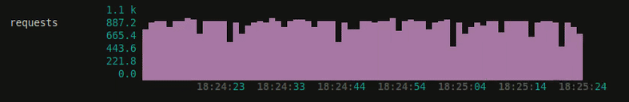

Shower Presentation Engine
Yours Truly, Famous Inc.
SSR — Подготовка к production
Никита Юстовский, Tvil.ru
SSR (Server Side Rendering)
- Что это?
- Зачем?
Nuxt.js — это фреймворк для создания приложений на Vue.js. Можно выбрать между универсальным,
статически-сгенерированным или одностраничным приложением.
Преимущества
Маркетинг доволен
Time-to-content
Сложности
Нагрузка на сервер
Пользовательские данные
Фильтры
Кэширование
nuxt-ssr-cache
cache-manager
cache-manager-redis
Chrome DevTools
node --inspect
node_modules/nuxt/bin/nuxt start --port 3000
nuxt-memwatch

i18next -> vue-i18n